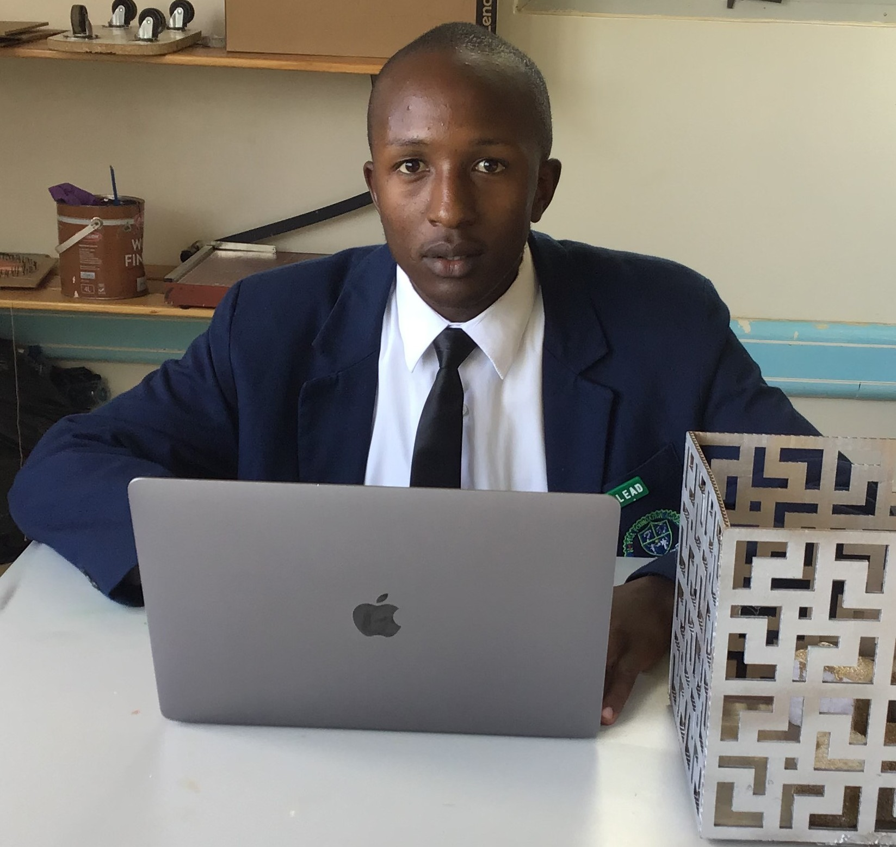

Featured
Why Africa Needs More AI-First Developers
The next wave of innovation won't come from Silicon Valley alone. Africa's unique challenges — in healthcare, agriculture, finance, and education — demand AI solutions built by people who understand the context.

Lucky Nakola
February 2026 · 6 min read
Key Takeaways
- Africa's population of 1.4B+ represents the largest untapped AI market globally
- Local context matters — AI models need to understand African languages, infrastructure, and culture
- Tools like WhatsApp API enable AI to reach millions without requiring smartphone apps